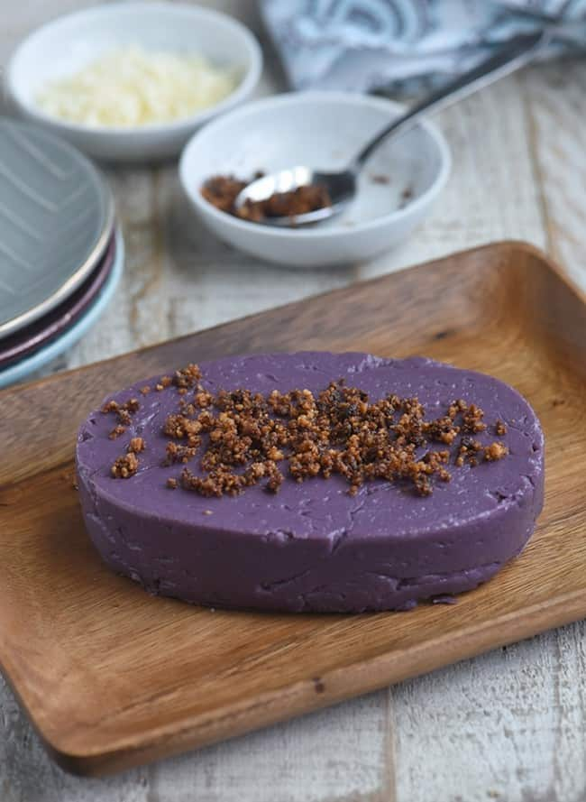

History
Ube halaya or halayang ube is made out of boiled and mashed purple yam. It's usually colored purple and has a sticky texture like jam. It is also commonly anglicized as ube jam, or called by its original native name. Dioscorea alata, the plant’s scientific name that bears ube, is indigenous to Asia, specifically grown in the Philippines. The yam is consisted of condensed milk and butter and also the ube.

Make One
Ingredients
- 1 package (16 ounces) frozen grated ube, thawed
- 1 can (13.5 ounces) coconut milk
- 1 can (14 ounces) sweetened condensed milk
- 1 can (12 ounces) evaporated milk
- 1/2 cup butter
- 1 cup sugar
- 2 to 3 drops ube extract (optional)
- 1 cup American processed cheese (Eden brand), shredded
For The Latik
Procedure
- In a wide, heavy-bottomed pan over medium heat, combine grated ube, coconut milk, condensed milk, evaporated milk, butter, and sugar.
- Bring to a boil, stirring occasionally until sugar is dissolved, butter is melted, and ube is dispersed
- Add ube extract, if using, and stir until mixture is evenly colored.
- Lower heat and continue to cook, stirring regularly, for about 30 to 40 minutes or until a soft, sticky dough forms.
- Add cheese and stir until melted. Continue to cook for another 10 to 15 minutes or until mixture is thick enough to cling to the back of the spoon and pulls slightly from the side of the pan.
- Lightly grease sides of a baking dish or llanera mold with coconut oil or melted butter.
- Spoon ube halaya into the prepared dish or mold and using a buttered spatula, spread and flatten evenly. Allow to cool.
- To serve, invert halaya onto a serving plate. Lightly brush the top with coconut oil and garnish with latik, shredded cheese, toasted coconut flakes or sweetened macapuno.
To Make Latik
- In a pan over medium heat, add coconut cream and bring to a boil. Cook, stirring occasionally until liquid starts to thicken.
- Lower heat and continue to cook. As the oil starts to separate and solids begin to form, regularly stir and scrape sides and bottom of the pan to prevent from burning.
- Continue to cook and stir until curds turn golden brown. Drain latik from the oil and store in separate containers until ready to use.